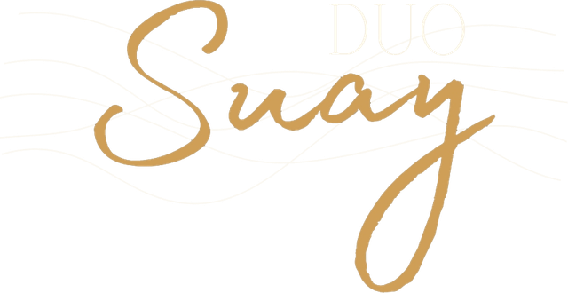

1
Capítol primer
Una flor al mes del fred
Què se celebra exactament, per què al mes menys indicat de l'any i el fenomen del tartamudeig poètic. Pràctica en dos grups: el grup RO i el grup SA.
♪ El desembre congelat

Dues inspectores de tradicions imparteixen el curs oficial per entendre, per fi, com funciona el Nadal. Amb rigor científic, solemnitat absoluta… i tota la sala cantant nadales.
L'espectacle
La Rosa i l'Eli, inspectores del Servei Comarcal de Tradicions i Altres Costums Difícils d'Explicar, han rebut un encàrrec delicadíssim: formar els Supervisors que, a partir de demà mateix, dirigiran els monitors encarregats d'explicar el Nadal a tota la població.
Ho fan amb l'única obra rigorosa i científica que existeix sobre la matèria: «El Nadal, manual d'ús», de la doctora en antropologia Maria Josep de Jesús, que ha documentat més de mil pessebres i ha resistit dinou sobretaules completes sense discutir amb cap cunyat.
El manual dona per fet que ningú no sap res. Les inspectores s'ho prenen molt seriosament. I l'humor neix exactament d'aquí. Perquè, com adverteixen elles mateixes, el Nadal és delicat i, si l'expliquem malament, algú el pot confondre amb el Carnaval.
El cos docent
Jaqueta fosca, acreditació al coll i un manual que tracten com una relíquia. Dues inspectores especialistes en tradició i nadales llegiran els capítols del manual i cantaran a sobre de bases instrumentals enregistrades, fent participar i cantar el públic.
Servei Comarcal de Tradicions i Altres Costums Difícils d'Explicar · Departament de Nadales
Especialista en pràctiques obligatòries de grup. Ningú no surt de la sala sense haver cantat.
Custòdia oficial del manual. És qui el porta, qui l'obre i qui insisteix que no se salti el pròleg.
Temari del curs
La conclusió científica principal de la doctora és que el Nadal no s'entén fins que no es canta. Per això cada capítol acaba amb una pràctica conjunta: la lletra surt a la pantalla i canta tota la sala.
Llisqueu per veure tots els capítols →
Què se celebra exactament, per què al mes menys indicat de l'any i el fenomen del tartamudeig poètic. Pràctica en dos grups: el grup RO i el grup SA.
Alimentació, manteniment i ús correcte del bastó. Un cas digestiu únic al món que cap facultat de veterinària no ha sabut explicar.
Taules que s'eixamplen, galets que fan de trompeta i les tres hipòtesis científiques sobre el FUM. Pràctica amb cullera imaginària.
Materials homologats, escales que no es respecten i la figura més delicada de totes: la que va ajupida i porta barretina.
La primera llista de regals de la història, la logística dels Reis d'Orient i el protocol oficial davant d'un regal que no agrada.
El repòs nadalenc, el cunyat que jura que no dorm i algú que sempre vetlla. La pràctica més difícil del curs: bressolar sense fer soroll.
Data de caducitat, dotze grans de raïm i l'única manera científica de conservar el Nadal la resta de l'any.
Nadales populars i «És un desig», de Josep Thió, amb base enregistrada i veus en directe. No cal saber cantar: la doctora ho té tot previst.
«El Nadal no és una cosa que es pugui guardar. El Nadal, o es comparteix, o es fa malbé. Com les bosses de neules que es queden obertes.»— Dra. Maria Josep de Jesús, pròleg del manual
Per què programar-lo
El públic canta, respon, fa exercicis en grup i s'aplaudeix a si mateix. Ningú no s'ho mira des de fora.
Un humor blanc i intel·ligent, fet de seriositat absoluta. Riuen els avis, els pares i els nets, cadascú per un motiu diferent.
Tió, escudella, pessebre, caganer, Reis, nadales… El Nadal d'aquí explicat com mai no l'havíeu sentit explicar.
Una taula, un faristol, dues cadires i una pantalla. Funciona en una biblioteca, un casal, un teatre o una sala d'actes.
Dubtes freqüents
No. Les lletres es projecten a la pantalla i les inspectores guien cada pràctica. Només cal posar-hi una mica de primavera.
No. Els textos i les lletres de les nadales expliquen el Nadal tal com es viu a casa nostra: el naixement de Betlem, que n'és l'origen, i les tradicions populars que hi han crescut al voltant, com el pessebre, el tió o la taula. Ho fan des de la cultura i amb humor, no des de la fe, i sense ofendre ningú. Hi cap tothom, cregui o no.
Sí. Les criatures s'ho passen d'allò més bé amb els exercicis de grup: picar el tió, bufar l'escudella, buscar el caganer… Els adults, amb tot el que hi ha entre línies.
Fem funcions des de finals de novembre fins a Reis. Les dates de desembre són les primeres que s'omplen: com més aviat ens escriviu, millor.
Duo Suay
La Rosa i l'Eli porten a escena altres històries, sempre amb dues veus en directe sobre bases instrumentals enregistrades i cançons fetes a mida.
Llisqueu per veure'ls tots →
Concert · Havaneres, boleros, valsets i rumbes
Una taverna marinera on la música, la paraula i la memòria es donen la mà a partir de les històries de la gent del mar. Un espectacle càlid i de petit format, amb les harmonies de dues veus femenines i moltes cançons pròpies, escrites expressament per a l'espectacle.
Espectacle medieval · Trobairitz, pergamins i auques
Dues trobairitz arriben a la fira amb una arqueta i cinc pergamins lligats amb cintes de colors. Els va escriure una dona molt gran d'Occitània, que els va fer prometre que els llegirien tal com estaven escrits. Hi ha una donzella, un pastor, un comte, una comtessa i un frare que ven relíquies… i, al final, se sap qui era aquella dona.
Teatre musical · Una vida entre vinyes
S'ha acabat la verema i, com cada any, el poble és convidat al celler del mas. Aquest any, però, la mestressa ja no hi és, i la seva filla i la seva nora llegeixen el discurs que ella va deixar escrit sense canviar-ne ni una coma… fins a l'últim apartat. Una història sobre la vida del celler i sobre com la vida continua, amb saba nova.
Contractació
Ajuntaments, biblioteques, entitats, escoles i empreses: expliqueu-nos què teniu pensat i us enviarem la proposta amb dates i condicions.
La població general us ho agrairà.